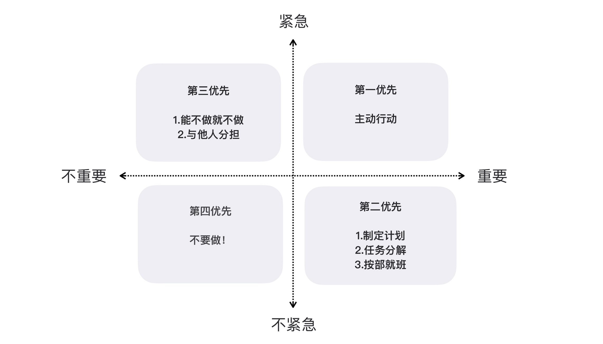

<!DOCTYPE HTML>
<html lang="zh-hans" >
    <head>
        <meta charset="UTF-8">
        <meta content="text/html; charset=utf-8" http-equiv="Content-Type">
        <title>18 | 需求管理：太多人给你安排任务，怎么办？ · 10x程序员工作法</title>
        <meta http-equiv="X-UA-Compatible" content="IE=edge" />
        <meta name="description" content="">
        <meta name="generator" content="GitBook 3.2.3">
        <meta name="author" content="zzturn">
        
        
    
    
    <link rel="stylesheet" href="../gitbook/style.css">

    
            
                
                <link rel="stylesheet" href="../gitbook/gitbook-plugin-code/plugin.css">
                
            
                
                <link rel="stylesheet" href="../gitbook/gitbook-plugin-prism/prism-coldark-cold.css">
                
            
                
                <link rel="stylesheet" href="../gitbook/gitbook-plugin-search-pro-fixed/search.css">
                
            
                
                <link rel="stylesheet" href="../gitbook/gitbook-plugin-back-to-top-button/plugin.css">
                
            
                
                <link rel="stylesheet" href="../gitbook/gitbook-plugin-mermaid-gb3/mermaid/mermaid.css">
                
            
                
                <link rel="stylesheet" href="../gitbook/gitbook-plugin-expandable-chapters-small/expandable-chapters-small.css">
                
            
                
                <link rel="stylesheet" href="../gitbook/gitbook-plugin-splitter/splitter.css">
                
            
                
                <link rel="stylesheet" href="../gitbook/gitbook-plugin-fontsettings/website.css">
                
            
                
                <link rel="stylesheet" href="../gitbook/gitbook-plugin-theme-d4t/style.css">
                
            
        

    

    
        
    
        
    
        
    
        
    
        
    
        
    


    

        
    
    
    <meta name="HandheldFriendly" content="true"/>
    <meta name="viewport" content="width=device-width, initial-scale=1, user-scalable=no">
    <meta name="apple-mobile-web-app-capable" content="yes">
    <meta name="apple-mobile-web-app-status-bar-style" content="black">
    <link rel="apple-touch-icon-precomposed" sizes="152x152" href="../gitbook/images/apple-touch-icon-precomposed-152.png">
    <link rel="shortcut icon" href="../gitbook/images/favicon.ico" type="image/x-icon">

    
    <link rel="next" href="80691.html" />
    
    
    <link rel="prev" href="79520.html" />
    

    </head>
    <body>
        
<div class="book">
    <div class="header-inner">
        <!-- LOGO -->
        <a href="/"><div class="logo"></div></a>
        <span class="title"></span>

        <!-- Search -->
        
<div id="book-search-input" role="search">
    <input type="text" placeholder="输入并搜索" />
</div>


        <!-- Nav -->
        <ul class="header-nav">
            <li>
                <a href="../book_ddd_shi_zhan_ke/" target="_self">DDD实战课</a>
            </li><li>
                <a href="../book_da_chang_jin_sheng_zhi_nan/" target="_self">大厂晋升指南</a>
            </li><li>
                <a href="../book_she_ji_mo_shi_zhi_mei/" target="_self">设计模式之美</a>
            </li><li>
                <a href="https://github.com/auohh/" target="_blank">Github</a>
            </li>
        </ul>
    </div>

    <div class="book-summary">
        <div class="sidebar-nav-space"></div>
        
        
        <nav role="navigation">
            


<ul class="summary">
    
    

    

    
        
        
    
        <li class="chapter " data-level="1.1" data-path="../">
            
                <a href="../">
            
                    
                    简介
            
                </a>
            

            
        </li>
    

    
        
        <li class="header">课程迭代</li>
        
        
    
        <li class="chapter " data-level="2.1" data-path="842071.html">
            
                <a href="842071.html">
            
                    
                    再次出发｜通向高手之路
            
                </a>
            

            
        </li>
    
        <li class="chapter " data-level="2.2" data-path="842069.html">
            
                <a href="842069.html">
            
                    
                    知识体系：你与高手之间到底差在哪？
            
                </a>
            

            
        </li>
    
        <li class="chapter " data-level="2.3" data-path="853059.html">
            
                <a href="853059.html">
            
                    
                    ASK 模型：为什么有些东西“学”不会？
            
                </a>
            

            
        </li>
    
        <li class="chapter " data-level="2.4" data-path="860196.html">
            
                <a href="860196.html">
            
                    
                    刻意练习：为什么我努力了很长时间水平却没有提升？
            
                </a>
            

            
        </li>
    
        <li class="chapter " data-level="2.5" data-path="863219.html">
            
                <a href="863219.html">
            
                    
                    教练：我该如何向高手学习？
            
                </a>
            

            
        </li>
    
        <li class="chapter " data-level="2.6" data-path="865955.html">
            
                <a href="865955.html">
            
                    
                    通才：我该如何不断拓宽自己的边界？
            
                </a>
            

            
        </li>
    

    
        
        <li class="header">开篇词</li>
        
        
    
        <li class="chapter " data-level="3.1" data-path="73980.html">
            
                <a href="73980.html">
            
                    
                    开篇词 | 程序员解决的问题，大多不是程序问题
            
                </a>
            

            
        </li>
    

    
        
        <li class="header">思考框架</li>
        
        
    
        <li class="chapter " data-level="4.1" data-path="74471.html">
            
                <a href="74471.html">
            
                    
                    01 | 10x程序员是如何思考的？
            
                </a>
            

            
        </li>
    

    
        
        <li class="header">以终为始</li>
        
        
    
        <li class="chapter " data-level="5.1" data-path="74834.html">
            
                <a href="74834.html">
            
                    
                    02 | 以终为始：如何让你的努力不白费？
            
                </a>
            

            
        </li>
    
        <li class="chapter " data-level="5.2" data-path="74828.html">
            
                <a href="74828.html">
            
                    
                    03 | DoD的价值：你完成了工作，为什么他们还不满意？
            
                </a>
            

            
        </li>
    
        <li class="chapter " data-level="5.3" data-path="75100.html">
            
                <a href="75100.html">
            
                    
                    04 | 接到需求任务，你要先做哪件事？
            
                </a>
            

            
        </li>
    
        <li class="chapter " data-level="5.4" data-path="75977.html">
            
                <a href="75977.html">
            
                    
                    05 | 持续集成：集成本身就是写代码的一个环节
            
                </a>
            

            
        </li>
    
        <li class="chapter " data-level="5.5" data-path="76260.html">
            
                <a href="76260.html">
            
                    
                    06 | 精益创业：产品经理不靠谱，你该怎么办？
            
                </a>
            

            
        </li>
    
        <li class="chapter " data-level="5.6" data-path="76567.html">
            
                <a href="76567.html">
            
                    
                    07 | 解决了很多技术问题，为什么你依然在“坑”里？
            
                </a>
            

            
        </li>
    
        <li class="chapter " data-level="5.7" data-path="76716.html">
            
                <a href="76716.html">
            
                    
                    08 | 为什么说做事之前要先进行推演？
            
                </a>
            

            
        </li>
    
        <li class="chapter " data-level="5.8" data-path="76929.html">
            
                <a href="76929.html">
            
                    
                    09 | 你的工作可以用数字衡量吗？
            
                </a>
            

            
        </li>
    
        <li class="chapter " data-level="5.9" data-path="77294.html">
            
                <a href="77294.html">
            
                    
                    10 | 迭代0: 启动开发之前，你应该准备什么？
            
                </a>
            

            
        </li>
    
        <li class="chapter " data-level="5.10" data-path="77752.html">
            
                <a href="77752.html">
            
                    
                    答疑解惑 | 如何管理你的上级？
            
                </a>
            

            
        </li>
    
        <li class="chapter " data-level="5.11" data-path="77773.html">
            
                <a href="77773.html">
            
                    
                    划重点 | 关于“以终为始”，你要记住的9句话
            
                </a>
            

            
        </li>
    

    
        
        <li class="header">任务分解</li>
        
        
    
        <li class="chapter " data-level="6.1" data-path="77913.html">
            
                <a href="77913.html">
            
                    
                    11 | 向埃隆·马斯克学习任务分解
            
                </a>
            

            
        </li>
    
        <li class="chapter " data-level="6.2" data-path="77917.html">
            
                <a href="77917.html">
            
                    
                    12 | 测试也是程序员的事吗？
            
                </a>
            

            
        </li>
    
        <li class="chapter " data-level="6.3" data-path="78104.html">
            
                <a href="78104.html">
            
                    
                    13 | 先写测试，就是测试驱动开发吗？
            
                </a>
            

            
        </li>
    
        <li class="chapter " data-level="6.4" data-path="78507.html">
            
                <a href="78507.html">
            
                    
                    14 | 大师级程序员的工作秘笈
            
                </a>
            

            
        </li>
    
        <li class="chapter " data-level="6.5" data-path="78542.html">
            
                <a href="78542.html">
            
                    
                    15 | 一起练习：手把手带你分解任务
            
                </a>
            

            
        </li>
    
        <li class="chapter " data-level="6.6" data-path="79494.html">
            
                <a href="79494.html">
            
                    
                    16 | 为什么你的测试不够好？
            
                </a>
            

            
        </li>
    
        <li class="chapter " data-level="6.7" data-path="79520.html">
            
                <a href="79520.html">
            
                    
                    17 | 程序员也可以“砍”需求吗？
            
                </a>
            

            
        </li>
    
        <li class="chapter active" data-level="6.8" data-path="80428.html">
            
                <a href="80428.html">
            
                    
                    18 | 需求管理：太多人给你安排任务，怎么办？
            
                </a>
            

            
        </li>
    
        <li class="chapter " data-level="6.9" data-path="80691.html">
            
                <a href="80691.html">
            
                    
                    19 | 如何用最小的代价做产品？
            
                </a>
            

            
        </li>
    
        <li class="chapter " data-level="6.10" data-path="81515.html">
            
                <a href="81515.html">
            
                    
                    答疑解惑 | 如何分解一个你不了解的技术任务？
            
                </a>
            

            
        </li>
    
        <li class="chapter " data-level="6.11" data-path="81870.html">
            
                <a href="81870.html">
            
                    
                    划重点 | 关于“任务分解”，你要重点掌握哪些事？
            
                </a>
            

            
        </li>
    

    
        
        <li class="header">沟通反馈</li>
        
        
    
        <li class="chapter " data-level="7.1" data-path="80755.html">
            
                <a href="80755.html">
            
                    
                    20 | 为什么世界和你的理解不一样？
            
                </a>
            

            
        </li>
    
        <li class="chapter " data-level="7.2" data-path="82581.html">
            
                <a href="82581.html">
            
                    
                    21 | 你的代码为谁而写？
            
                </a>
            

            
        </li>
    
        <li class="chapter " data-level="7.3" data-path="82844.html">
            
                <a href="82844.html">
            
                    
                    22 | 轻量级沟通：你总是在开会吗？
            
                </a>
            

            
        </li>
    
        <li class="chapter " data-level="7.4" data-path="83082.html">
            
                <a href="83082.html">
            
                    
                    23 | 可视化：一种更为直观的沟通方式
            
                </a>
            

            
        </li>
    
        <li class="chapter " data-level="7.5" data-path="83461.html">
            
                <a href="83461.html">
            
                    
                    24 | 快速反馈：为什么你们公司总是做不好持续集成？
            
                </a>
            

            
        </li>
    
        <li class="chapter " data-level="7.6" data-path="83841.html">
            
                <a href="83841.html">
            
                    
                    25 | 开发中的问题一再出现，应该怎么办？
            
                </a>
            

            
        </li>
    
        <li class="chapter " data-level="7.7" data-path="84185.html">
            
                <a href="84185.html">
            
                    
                    26 | 作为程序员，你也应该聆听用户声音
            
                </a>
            

            
        </li>
    
        <li class="chapter " data-level="7.8" data-path="84274.html">
            
                <a href="84274.html">
            
                    
                    用户故事 | 站在前人的肩膀上，领取属于你的高效工作秘籍
            
                </a>
            

            
        </li>
    
        <li class="chapter " data-level="7.9" data-path="84374.html">
            
                <a href="84374.html">
            
                    
                    27 | 尽早暴露问题： 为什么被指责的总是你？
            
                </a>
            

            
        </li>
    
        <li class="chapter " data-level="7.10" data-path="84663.html">
            
                <a href="84663.html">
            
                    
                    28 | 结构化：写文档也是一种学习方式
            
                </a>
            

            
        </li>
    
        <li class="chapter " data-level="7.11" data-path="85049.html">
            
                <a href="85049.html">
            
                    
                    答疑解惑 | 持续集成，一条贯穿诸多实践的主线
            
                </a>
            

            
        </li>
    
        <li class="chapter " data-level="7.12" data-path="85625.html">
            
                <a href="85625.html">
            
                    
                    划重点 | 一次关于“沟通反馈”主题内容的复盘
            
                </a>
            

            
        </li>
    

    
        
        <li class="header">自动化</li>
        
        
    
        <li class="chapter " data-level="8.1" data-path="85915.html">
            
                <a href="85915.html">
            
                    
                    加餐 | 你真的了解重构吗？
            
                </a>
            

            
        </li>
    
        <li class="chapter " data-level="8.2" data-path="86210.html">
            
                <a href="86210.html">
            
                    
                    29 | “懒惰”应该是所有程序员的骄傲
            
                </a>
            

            
        </li>
    
        <li class="chapter " data-level="8.3" data-path="86561.html">
            
                <a href="86561.html">
            
                    
                    30 | 一个好的项目自动化应该是什么样子的？
            
                </a>
            

            
        </li>
    
        <li class="chapter " data-level="8.4" data-path="87008.html">
            
                <a href="87008.html">
            
                    
                    31 | 程序员怎么学习运维知识？
            
                </a>
            

            
        </li>
    
        <li class="chapter " data-level="8.5" data-path="87229.html">
            
                <a href="87229.html">
            
                    
                    32 | 持续交付：有持续集成就够了吗？
            
                </a>
            

            
        </li>
    
        <li class="chapter " data-level="8.6" data-path="87582.html">
            
                <a href="87582.html">
            
                    
                    33 | 如何做好验收测试？
            
                </a>
            

            
        </li>
    
        <li class="chapter " data-level="8.7" data-path="87845.html">
            
                <a href="87845.html">
            
                    
                    34 | 你的代码是怎么变混乱的？
            
                </a>
            

            
        </li>
    
        <li class="chapter " data-level="8.8" data-path="88309.html">
            
                <a href="88309.html">
            
                    
                    35 | 总是在说MVC分层架构，但你真的理解分层吗？
            
                </a>
            

            
        </li>
    
        <li class="chapter " data-level="8.9" data-path="88764.html">
            
                <a href="88764.html">
            
                    
                    36 | 为什么总有人觉得5万块钱可以做一个淘宝？
            
                </a>
            

            
        </li>
    
        <li class="chapter " data-level="8.10" data-path="89049.html">
            
                <a href="89049.html">
            
                    
                    37 | 先做好DDD再谈微服务吧，那只是一种部署形式
            
                </a>
            

            
        </li>
    
        <li class="chapter " data-level="8.11" data-path="89050.html">
            
                <a href="89050.html">
            
                    
                    答疑解惑 | 持续集成、持续交付，然后呢？
            
                </a>
            

            
        </li>
    
        <li class="chapter " data-level="8.12" data-path="89662.html">
            
                <a href="89662.html">
            
                    
                    划重点 | “自动化”主题的重点内容回顾汇总
            
                </a>
            

            
        </li>
    

    
        
        <li class="header">综合运用</li>
        
        
    
        <li class="chapter " data-level="9.1" data-path="89981.html">
            
                <a href="89981.html">
            
                    
                    38 | 新入职一家公司，怎么快速进入工作状态？
            
                </a>
            

            
        </li>
    
        <li class="chapter " data-level="9.2" data-path="90231.html">
            
                <a href="90231.html">
            
                    
                    39 | 面对遗留系统，你应该这样做
            
                </a>
            

            
        </li>
    
        <li class="chapter " data-level="9.3" data-path="90864.html">
            
                <a href="90864.html">
            
                    
                    40 | 我们应该如何保持竞争力？
            
                </a>
            

            
        </li>
    
        <li class="chapter " data-level="9.4" data-path="91127.html">
            
                <a href="91127.html">
            
                    
                    答疑解惑 | 如何在实际工作中推行新观念？
            
                </a>
            

            
        </li>
    
        <li class="chapter " data-level="9.5" data-path="91433.html">
            
                <a href="91433.html">
            
                    
                    划重点 | “综合运用”主题内容的全盘回顾
            
                </a>
            

            
        </li>
    
        <li class="chapter " data-level="9.6" data-path="92154.html">
            
                <a href="92154.html">
            
                    
                    总复习 | 重新审视“最佳实践”
            
                </a>
            

            
        </li>
    
        <li class="chapter " data-level="9.7" data-path="92361.html">
            
                <a href="92361.html">
            
                    
                    总复习 | 重新来“看书”
            
                </a>
            

            
        </li>
    

    
        
        <li class="header">结束语 & 结课测试</li>
        
        
    
        <li class="chapter " data-level="10.1" data-path="92912.html">
            
                <a href="92912.html">
            
                    
                    结束语 | 少做事，才能更有效地工作
            
                </a>
            

            
        </li>
    
        <li class="chapter " data-level="10.2" data-path="247410.html">
            
                <a href="247410.html">
            
                    
                    结课测试 | 这些10x程序员工作法的知识你都掌握了吗？
            
                </a>
            

            
        </li>
    

    
        
        <li class="header">加餐分享</li>
        
        
    
        <li class="chapter " data-level="11.1" data-path="240265.html">
            
                <a href="240265.html">
            
                    
                    第二季回归 | 我带着软件设计课回来了！
            
                </a>
            

            
        </li>
    
        <li class="chapter " data-level="11.2" data-path="326184.html">
            
                <a href="326184.html">
            
                    
                    第三季回归 | 我们一起来写好代码！
            
                </a>
            

            
        </li>
    
        <li class="chapter " data-level="11.3" data-path="404270.html">
            
                <a href="404270.html">
            
                    
                    第四季回归 | 通向高质量代码之路
            
                </a>
            

            
        </li>
    
        <li class="chapter " data-level="11.4" data-path="657299.html">
            
                <a href="657299.html">
            
                    
                    特别加餐 | ChatGPT来了，你的编程效率提高了吗？
            
                </a>
            

            
        </li>
    
        <li class="chapter " data-level="11.5" data-path="730898.html">
            
                <a href="730898.html">
            
                    
                    私享直播｜1小时参透程序员的AI三重境界
            
                </a>
            

            
        </li>
    
        <li class="chapter " data-level="11.6" data-path="732916.html">
            
                <a href="732916.html">
            
                    
                    私享直播｜程序员的上限、下限和第二曲线
            
                </a>
            

            
        </li>
    
        <li class="chapter " data-level="11.7" data-path="822120.html">
            
                <a href="822120.html">
            
                    
                    第五季回归｜让我们一起共赴AI时代！
            
                </a>
            

            
        </li>
    

    

    <li class="divider"></li>

    <li>
        <a href="https://www.gitbook.com" target="blank" class="gitbook-link">
            本书使用 GitBook 发布
        </a>
    </li>
</ul>


        </nav>
        
        
    </div>

    <!-- Content nav -->
    <div class="book-anchor">
        <div class="book-anchor-title">ON THIS PAGE</div>
        <div class="book-anchor-body">

        </div>
    </div>

    <div class="book-body">
        
        <div class="body-inner">
            
            

<div class="book-header" role="navigation">
    

    <!-- Title -->
    <h1>
        <i class="fa fa-circle-o-notch fa-spin"></i>
        <a href=".." >18 | 需求管理：太多人给你安排任务，怎么办？</a>
    </h1>
</div>


            <div class="page-wrapper" tabindex="-1" role="main">
                <div class="page-inner">
                    
<div id="book-search-results">
    <div class="search-noresults">
    
                    <section class="normal markdown-section">
                        
                        <h1 id="18--&#x9700;&#x6C42;&#x7BA1;&#x7406;&#xFF1A;&#x592A;&#x591A;&#x4EBA;&#x7ED9;&#x4F60;&#x5B89;&#x6392;&#x4EFB;&#x52A1;&#xFF0C;&#x600E;&#x4E48;&#x529E;&#xFF1F;">18 | &#x9700;&#x6C42;&#x7BA1;&#x7406;&#xFF1A;&#x592A;&#x591A;&#x4EBA;&#x7ED9;&#x4F60;&#x5B89;&#x6392;&#x4EFB;&#x52A1;&#xFF0C;&#x600E;&#x4E48;&#x529E;&#xFF1F;</h1>
<p>&#x4E0A;&#x4E00;&#x8BB2;&#x6211;&#x4EEC;&#x8BB2;&#x4E86;&#x9700;&#x6C42;&#x7684;&#x5206;&#x89E3;&#xFF0C;&#x6211;&#x4EE5;&#x7528;&#x6237;&#x6545;&#x4E8B;&#x4E3A;&#x4F8B;&#xFF0C;&#x7ED9;&#x4F60;&#x8BB2;&#x4E86;&#x6211;&#x4EEC;&#x5E94;&#x8BE5;&#x628A;&#x5927;&#x7684;&#x9700;&#x6C42;&#x62C6;&#x5206;&#x6210;&#x5C0F;&#x7684;&#x9700;&#x6C42;&#xFF0C;&#x4F46;&#x662F;&#x4E0D;&#x662F;&#x53EA;&#x8981;&#x628A;&#x9700;&#x6C42;&#x62C6;&#x5F00;&#x4E86;&#x5C31;&#x4E07;&#x4E8B;&#x5927;&#x5409;&#x4E86;&#x5462;&#xFF1F;&#x663E;&#x7136;&#x4E0D;&#x662F;&#x3002;&#x4ECA;&#x5929;&#x6211;&#x4EEC;&#x518D;&#x6765;&#x63A2;&#x8BA8;&#x53E6;&#x4E00;&#x4E2A;&#x4E0E;&#x9700;&#x6C42;&#x5F3A;&#x76F8;&#x5173;&#x7684;&#x8BDD;&#x9898;&#xFF1A;&#x9700;&#x6C42;&#x7BA1;&#x7406;&#x3002;</p>
<p>&#x9700;&#x6C42;&#x7BA1;&#x7406;&#xFF1F;&#x8BB8;&#x591A;&#x7A0B;&#x5E8F;&#x5458;&#x7684;&#x7B2C;&#x4E00;&#x76F4;&#x89C9;&#x901A;&#x5E38;&#x662F;&#xFF0C;&#x8FD9;&#x8981;&#x4E48;&#x662F;&#x4EA7;&#x54C1;&#x7ECF;&#x7406;&#x7684;&#x4E8B;&#xFF0C;&#x8981;&#x4E48;&#x662F;&#x9879;&#x76EE;&#x7ECF;&#x7406;&#x7684;&#x4E8B;&#xFF0C;&#x8DDF;&#x6211;&#x6709;&#x4EC0;&#x4E48;&#x5173;&#x7CFB;&#xFF1F;&#x6211;&#x77E5;&#x9053;&#x5F88;&#x591A;&#x4EBA;&#x4F1A;&#x8FD9;&#x4E48;&#x60F3;&#xFF0C;&#x53EF;&#x6211;&#x60F3;&#x8BF4;&#x7684;&#x662F;&#xFF0C;&#x5982;&#x679C;&#x4F60;&#x4E0D;&#x4E86;&#x89E3;&#x9700;&#x6C42;&#x662F;&#x600E;&#x4E48;&#x7BA1;&#x7406;&#x7684;&#xFF0C;&#x5373;&#x4FBF;&#x662F;&#x8FDB;&#x884C;&#x4E86;&#x9700;&#x6C42;&#x5206;&#x89E3;&#xFF0C;&#x6700;&#x7EC8;&#x7684;&#x7ED3;&#x679C;&#x5F88;&#x6709;&#x53EF;&#x80FD;&#x4F9D;&#x7136;&#x662F;&#x4F60;&#x6DF1;&#x9677;&#x6CE5;&#x6F6D;&#x82E6;&#x82E6;&#x6323;&#x624E;&#x800C;&#x4E0D;&#x81EA;&#x77E5;&#x3002;</p>
<p>&#x4E3A;&#x4EC0;&#x4E48;&#x8FD9;&#x4E48;&#x8BF4;&#x5462;&#xFF1F;&#x6211;&#x7ED9;&#x4F60;&#x8BB2;&#x4E00;&#x4E2A;&#x53D1;&#x751F;&#x5728;&#x6211;&#x8EAB;&#x8FB9;&#x7684;&#x6545;&#x4E8B;&#x3002;</p>
<h2 id="&#x6700;&#x65E0;&#x8111;&#x7684;&#x9700;&#x6C42;&#x7BA1;&#x7406;&#x6CD5;&#xFF1A;&#x8001;&#x677F;&#x8BF4;&#x7684;">&#x6700;&#x65E0;&#x8111;&#x7684;&#x9700;&#x6C42;&#x7BA1;&#x7406;&#x6CD5;&#xFF1A;&#x8001;&#x677F;&#x8BF4;&#x7684;</h2>
<p>&#x6709;&#x4E00;&#x6B21;&#xFF0C;&#x6211;&#x4EEC;&#x7EC4;&#x7EC7;&#x4E86;&#x4E00;&#x6B21;&#x5404;&#x56E2;&#x961F;&#x8D1F;&#x8D23;&#x4EBA;&#x7684;&#x5410;&#x69FD;&#x5927;&#x4F1A;&#xFF0C;&#x8BA9;&#x5927;&#x5BB6;&#x628A;&#x9047;&#x5230;&#x7684;&#x95EE;&#x9898;&#x5728;&#x53F0;&#x9762;&#x4E0A;&#x201C;&#x6446;&#x201D;&#x4E00;&#x4E0B;&#x3002;&#x4E00;&#x4E2A;&#x5F00;&#x53D1;&#x56E2;&#x961F;&#x7684;&#x8D1F;&#x8D23;&#x4EBA;&#x8BF4;&#xFF1A;&#x201C;&#x6211;&#x8FD9;&#x8FB9;&#x5012;&#x6392;&#x671F;&#x592A;&#x4E25;&#x91CD;&#x4E86;&#xFF0C;&#x6BCF;&#x4E2A;&#x4EA7;&#x54C1;&#x7ECF;&#x7406;&#x5230;&#x6211;&#x8FD9;&#x91CC;&#x90FD;&#x8BF4;&#x4E0A;&#x7EBF;&#x65E5;&#x671F;&#x5DF2;&#x7ECF;&#x5B9A;&#x597D;&#x4E86;&#xFF0C;&#x6211;&#x8FD9;&#x8FB9;&#x8D44;&#x6E90;&#x6709;&#x9650;&#xFF0C;&#x5B9E;&#x5728;&#x662F;&#x6297;&#x4E0D;&#x4F4F;&#x4E86;&#x3002;&#x201D;</p>
<p>&#x51FA;&#x4E8E;&#x597D;&#x5947;&#xFF0C;&#x6709;&#x4EBA;&#x95EE;&#xFF1A;&#x201C;&#x8FD9;&#x4E9B;&#x4EFB;&#x52A1;&#x90FD;&#x4E00;&#x6837;&#x91CD;&#x8981;&#x5417;&#xFF1F;&#x201D;</p>
<p>&#x8FD9;&#x4E2A;&#x8D1F;&#x8D23;&#x4EBA;&#x65E0;&#x5948;&#x5730;&#x6447;&#x6447;&#x5934;&#xFF0C;&#x201C;&#x4ED6;&#x4EEC;&#x90FD;&#x8BF4;&#x81EA;&#x5DF1;&#x7684;&#x4EFB;&#x52A1;&#x91CD;&#x8981;&#x3002;&#x201D;</p>
<p>&#x201C;&#x4ED6;&#x4EEC;&#x51ED;&#x4EC0;&#x4E48;&#x8BF4;&#x81EA;&#x5DF1;&#x7684;&#x4EFB;&#x52A1;&#x91CD;&#x8981;&#x5462;&#xFF1F;&#x201D;&#x6211;&#x4E5F;&#x95EE;&#x4E86;&#x4E00;&#x4E2A;&#x95EE;&#x9898;&#x3002;</p>
<p>&#x8FD9;&#x4E2A;&#x8D1F;&#x8D23;&#x4EBA;&#x8BF4;&#xFF1A;&#x201C;&#x4ED6;&#x4EEC;&#x544A;&#x8BC9;&#x6211;&#xFF0C;&#x662F;&#x8001;&#x677F;&#x8BF4;&#x7684;&#x3002;&#x201D;</p>
<p>&#x8FD9;&#x662F;&#x4E0D;&#x662F;&#x4E00;&#x4E2A;&#x5F88;&#x719F;&#x6089;&#x7684;&#x573A;&#x666F;&#xFF1F;&#x4E00;&#x5806;&#x4EFB;&#x52A1;&#x538B;&#x8FC7;&#x6765;&#xFF0C;&#x53EA;&#x662F;&#x56E0;&#x4E3A;&#x8FD9;&#x662F;&#x8001;&#x677F;&#x7684;&#x4E00;&#x53E5;&#x8BDD;&#x3002;&#x6211;&#x4EEC;&#x7684;&#x8001;&#x677F;&#x90FD;&#x662F;&#x8FD9;&#x4E48;&#x4E0D;&#x8FD1;&#x4EBA;&#x60C5;&#x5417;&#xFF1F;&#x5176;&#x5B9E;&#xFF0C;&#x5927;&#x6982;&#x7387;&#x6765;&#x770B;&#xFF0C;&#x5E76;&#x4E0D;&#x662F;&#x3002;</p>
<p><strong>&#x5C31;&#x51ED;&#x4E00;&#x53E5;&#x201C;&#x8001;&#x677F;&#x8BF4;&#x7684;&#x201D;&#xFF0C;&#x6211;&#x4EEC;&#x5C31;&#x53EF;&#x4EE5;&#x5224;&#x65AD;&#x51FA;&#xFF0C;&#x4EA7;&#x54C1;&#x7ECF;&#x7406;&#x7F3A;&#x4E4F;&#x5BF9;&#x9700;&#x6C42;&#x7BA1;&#x7406;&#x5E94;&#x6709;&#x7684;&#x7406;&#x89E3;&#x3002;</strong>&#x800C;&#x7814;&#x53D1;&#x56E2;&#x961F;&#x4E5F;&#x56E0;&#x4E3A;&#x65E0;&#x8111;&#x5730;&#x63A5;&#x53D7;&#x4E86;&#x9700;&#x6C42;&#xFF0C;&#x51E0;&#x4E4E;&#x5C06;&#x81EA;&#x5DF1;&#x538B;&#x57AE;&#x3002;</p>
<p>&#x8FD9;&#x65F6;&#x5019;&#xFF0C;CTO &#x53D1;&#x8BDD;&#x4E86;&#xFF1A;&#x201C;&#x53E3;&#x5934;&#x7684;&#x4E1C;&#x897F;&#x4E0D;&#x7B97;&#x6570;&#xFF0C;&#x5982;&#x679C;&#x4ED6;&#x4EEC;&#x8BF4;&#x662F;&#x8001;&#x677F;&#x8BF4;&#x7684;&#xFF0C;&#x90A3;&#x5C31;&#x8BA9;&#x8001;&#x677F;&#x53D1;&#x90AE;&#x4EF6;&#x786E;&#x8BA4;&#x3002;&#x201D;</p>
<p>&#x6211;&#x5F88;&#x8BA4;&#x53EF;CTO&#x7684;&#x8BF4;&#x6CD5;&#xFF0C;&#x4F46;&#x6211;&#x5E76;&#x4E0D;&#x653E;&#x5FC3;&#x90A3;&#x4E2A;&#x5F00;&#x53D1;&#x56E2;&#x961F;&#x7684;&#x8D1F;&#x8D23;&#x4EBA;&#xFF0C;&#x4E8E;&#x662F;&#x6211;&#x95EE;&#x4ED6;&#xFF1A;&#x201C;&#x4F60;&#x4F1A;&#x8BA9;&#x4EA7;&#x54C1;&#x7ECF;&#x7406;&#x8FD9;&#x4E48;&#x53BB;&#x505A;&#x5417;&#xFF1F;&#x201D;&#x679C;&#x7136;&#xFF0C;&#x4ED6;&#x72B9;&#x8C6B;&#x4E86;&#x3002;</p>
<p>&#x201C;&#x4EA7;&#x54C1;&#x7ECF;&#x7406;&#x53EF;&#x80FD;&#x4E0D;&#x4F1A;&#x548C;&#x8001;&#x677F;&#x8FD9;&#x4E48;&#x8BF4;&#x3002;&#x90A3;&#x4F60;&#x53BB;&#x8BF4;&#x597D;&#x4E86;&#x3002;&#x201D;&#x6211;&#x4EEC;&#x53C8;&#x7ED9;&#x4ED6;&#x63D0;&#x4E86;&#x4E2A;&#x5EFA;&#x8BAE;&#x3002;&#x663E;&#x7136;&#xFF0C;&#x4ED6;&#x66F4;&#x72B9;&#x8C6B;&#x4E86;&#xFF0C;&#x6BD5;&#x7ADF;&#x8981;&#x9762;&#x5BF9;&#x5927;&#x8001;&#x677F;&#x3002;</p>
<p>&#x9488;&#x5BF9;&#x8FD9;&#x79CD;&#x60C5;&#x51B5;&#xFF0C;&#x6211;&#x4EEC;&#x53C8;&#x7ED9;&#x51FA;&#x4E86;&#x4E00;&#x4E2A;&#x89E3;&#x51B3;&#x529E;&#x6CD5;&#xFF0C;&#x201C;&#x5982;&#x679C;&#x4F60;&#x62C5;&#x5FC3;&#x4EA7;&#x54C1;&#x7ECF;&#x7406;&#x4E0D;&#x8FD9;&#x4E48;&#x505A;&#xFF0C;&#x4F60;&#x53EF;&#x4EE5;&#x76F4;&#x63A5;&#x53D1;&#x90AE;&#x4EF6;&#x7ED9;&#x8001;&#x677F;&#xFF0C;&#x540C;&#x65F6;&#x6284;&#x9001; CTO&#x3002;&#x201D;</p>
<p>&#x201C;&#x5BF9;&#xFF0C;&#x53EF;&#x4EE5;&#x8FD9;&#x4E48;&#x505A;&#x201D;&#xFF0C;CTO &#x628A;&#x8D23;&#x4EFB;&#x625B;&#x4E86;&#x8FC7;&#x53BB;&#x3002;&#x8FD9;&#x4E2A;&#x8D1F;&#x8D23;&#x4EBA;&#x5FC3;&#x91CC;&#x4E00;&#x4E0B;&#x5B50;&#x6709;&#x5E95;&#x4E86;&#x3002;</p>
<p>&#x662F;&#x4E0D;&#x662F;&#x6709;&#x79CD;&#x4F3C;&#x66FE;&#x76F8;&#x8BC6;&#x7684;&#x611F;&#x89C9;&#xFF1F;&#x5176;&#x5B9E;&#xFF0C;&#x8FD9;&#x4E2A;&#x6545;&#x4E8B;&#x53EA;&#x8981;&#x518D;&#x5F80;&#x4E0B;&#x5EF6;&#x4F38;&#x4E00;&#x70B9;&#xFF0C;&#x5C31;&#x5230;&#x4E86;&#x6211;&#x4EEC;&#x7A0B;&#x5E8F;&#x5458;&#x8EAB;&#x8FB9;&#x3002;</p>
<p>&#x4F5C;&#x4E3A;&#x7A0B;&#x5E8F;&#x5458;&#xFF0C;&#x6211;&#x4EEC;&#x9762;&#x4E34;&#x7684;&#x573A;&#x666F;&#x5F80;&#x5F80;&#x662F;&#xFF0C;&#x4E00;&#x4E2A;&#x9700;&#x6C42;&#x4E0D;&#x660E;&#x5C31;&#x91CC;&#x5730;&#x6765;&#x4E86;&#xFF0C;&#x4F60;&#x7684;&#x5468;&#x672B;&#x5047;&#x671F;&#x5168;&#x90E8;&#x6CE1;&#x6C64;&#xFF0C;&#x56E0;&#x4E3A;&#x4F60;&#x7684;&#x8D1F;&#x8D23;&#x4EBA;&#x4F1A;&#x548C;&#x4F60;&#x8BF4;&#xFF0C;&#x8FD9;&#x662F;&#x8001;&#x677F;&#x8BF4;&#x7684;&#x3002;</p>
<p>&#x8F6F;&#x4EF6;&#x884C;&#x4E1A;&#x6709;&#x4E2A;&#x6BB5;&#x5B50;&#xFF1A;&#x505A;&#x8F6F;&#x4EF6;&#xFF0C;&#x6700;&#x7406;&#x60F3;&#x7684;&#x4EA4;&#x4ED8;&#x65E5;&#x671F;&#x662F;&#x4EC0;&#x4E48;&#x65F6;&#x5019;&#xFF1F;&#x7B54;&#x6848;&#x662F;&#x6628;&#x5929;&#xFF0C;&#x5176;&#x6B21;&#x662F;&#x5C3D;&#x5FEB;&#x3002;&#x6240;&#x6709;&#x63D0;&#x51FA;&#x4E1A;&#x52A1;&#x9700;&#x6C42;&#x7684;&#x4EBA;&#x90FD;&#x6068;&#x4E0D;&#x5F97;&#x9700;&#x6C42;&#x65E9;&#x5C31;&#x505A;&#x597D;&#x4E86;&#x3002;&#x4F46;&#x4E8B;&#x5B9E;&#x603B;&#x662F;&#x90A3;&#x4E48;&#x4E0D;&#x5982;&#x4EBA;&#x610F;&#xFF0C;&#x6240;&#x4EE5;&#xFF0C;&#x4ED6;&#x4EEC;&#x53EA;&#x80FD;&#x5BC4;&#x5E0C;&#x671B;&#x4E8E;&#x9700;&#x6C42;&#x88AB;&#x5C3D;&#x5FEB;&#x5B9E;&#x73B0;&#x3002;</p>
<p>&#x5982;&#x679C;&#x6211;&#x4EEC;&#x7B49;&#x7740;&#x6240;&#x6709;&#x9700;&#x6C42;&#x90FD;&#x5F00;&#x53D1;&#x597D;&#x4E86;&#x518D;&#x4E0A;&#x7EBF;&#x5462;&#xFF1F;&#x8FD9;&#x5C31;&#x662F;&#x5F53;&#x5E74;&#x6240;&#x8C13;&#x7011;&#x5E03;&#x6A21;&#x578B;&#x505A;&#x7684;&#x4E8B;&#xFF0C;&#x653E;&#x5728;&#x4E8C;&#x5341;&#x5E74;&#x524D;&#xFF0C;&#x8FD9;&#x79CD;&#x505A;&#x6CD5;&#x8FD8;&#x6709;&#x751F;&#x5B58;&#x7A7A;&#x95F4;&#xFF0C;&#x4F46;&#x4ECA;&#x5929;&#x8FD9;&#x79CD;&#x505A;&#x6CD5;&#x663E;&#x7136;&#x5DF2;&#x7ECF;&#x4E0D;&#x5408;&#x65F6;&#x5B9C;&#x4E86;&#x3002;</p>
<p>&#x5173;&#x4E8E;&#x5982;&#x4F55;&#x505A;&#x8F6F;&#x4EF6;&#xFF0C;&#x6211;&#x4EEC;&#x5DF2;&#x7ECF;&#x8BA8;&#x8BBA;&#x4E86;&#x5F88;&#x591A;&#xFF0C;&#x5173;&#x952E;&#x70B9;&#x5C31;&#x5728;&#x4E8E;&#x8FD9;&#x4E2A;&#x4E16;&#x754C;&#x6709;&#x592A;&#x591A;&#x7684;&#x4E0D;&#x786E;&#x5B9A;&#xFF0C;&#x6211;&#x4EEC;&#x53EA;&#x597D;&#x628A;&#x4EA7;&#x54C1;&#x7684;&#x201C;&#x4E00;&#x90E8;&#x5206;&#x201D;&#x5F00;&#x53D1;&#x597D;&#xFF0C;&#x9001;&#x4E0A;&#x7EBF;&#x3002;</p>
<p>&#x8FD9;&#x5C31;&#x5F15;&#x51FA;&#x4E86;&#x4E00;&#x4E2A;&#x95EE;&#x9898;&#xFF0C;&#x5230;&#x5E95;&#x662F;&#x9009;&#x62E9;&#x201C;&#x54EA;&#x90E8;&#x5206;&#x201D;&#x4F18;&#x5148;&#x4E0A;&#x7EBF;&#x5462;&#xFF1F;&#x6211;&#x4EEC;&#x5FC5;&#x987B;&#x5728;&#x5B8F;&#x5927;&#x7684;&#x7406;&#x60F3;&#x548C;&#x9AA8;&#x611F;&#x7684;&#x73B0;&#x5B9E;&#x4E2D;&#x4F5C;&#x51FA;&#x53D6;&#x820D;&#x3002;&#x8FD9;&#x4E5F;&#x5C31;&#x7275;&#x626F;&#x51FA;&#x9700;&#x6C42;&#x7BA1;&#x7406;&#x7684;&#x672C;&#x8D28;&#xFF0C;&#x5B9E;&#x9645;&#x4E0A;&#x662F;&#x4E2A;&#x4F18;&#x5148;&#x7EA7;&#x7684;&#x95EE;&#x9898;&#x3002;</p>
<h2 id="&#x9700;&#x6C42;&#x7684;&#x4F18;&#x5148;&#x7EA7;">&#x9700;&#x6C42;&#x7684;&#x4F18;&#x5148;&#x7EA7;</h2>
<p>&#x201C;&#x6765;&#x81EA;&#x8001;&#x677F;&#x201D;&#xFF0C;&#x8FD9;&#x662F;&#x5224;&#x65AD;&#x4F18;&#x5148;&#x7EA7;&#x6700;&#x7B80;&#x5355;&#x7684;&#x7B54;&#x6848;&#xFF0C;&#x4E5F;&#x662F;&#x63A8;&#x5378;&#x8D23;&#x4EFB;&#x7684;&#x4E00;&#x4E2A;&#x7B54;&#x6848;&#x3002;&#x5176;&#x6F5C;&#x53F0;&#x8BCD;&#x662F;&#xFF0C;&#x538B;&#x529B;&#x5927;&#x4E0D;&#x602A;&#x6211;&#xFF0C;&#x8981;&#x602A;&#x5C31;&#x602A;&#x8001;&#x677F;&#x53BB;&#x3002;&#x201C;&#x6765;&#x81EA;&#x8001;&#x677F;&#x201D;&#x4E0D;&#x5E94;&#x8BE5;&#x6210;&#x4E3A;&#x4F18;&#x5148;&#x505A;&#x4E8B;&#x7684;&#x6307;&#x6807;&#x3002;</p>
<p>&#x9996;&#x5148;&#xFF0C;&#x6211;&#x4EEC;&#x8981;&#x660E;&#x786E;&#x4E00;&#x70B9;&#xFF0C;&#x4F18;&#x5148;&#x7EA7;&#x8FD9;&#x79CD;&#x4E8B;&#x5927;&#x5BB6;&#x4E5F;&#x662F;&#x53EF;&#x4EE5;&#x8C08;&#x7684;&#xFF0C;&#x5927;&#x591A;&#x6570;&#x80FD;&#x5F53;&#x8001;&#x677F;&#x7684;&#x4EBA;&#x90FD;&#x662F;&#x53EF;&#x4EE5;&#x8BB2;&#x9053;&#x7406;&#x7684;&#x3002;&#x4F46;&#x8981;&#x548C;&#x8001;&#x677F;&#x8C08;&#xFF0C;&#x6211;&#x4EEC;&#x5F97;&#x77E5;&#x9053;&#x600E;&#x4E48;&#x8BB2;&#x9053;&#x7406;&#x3002;&#x51C6;&#x5907;&#x4E00;&#x4E9B;&#x57FA;&#x7840;&#x77E5;&#x8BC6;&#xFF0C;&#x624D;&#x80FD;&#x4E0E;&#x5404;&#x7EA7;&#x8001;&#x677F;&#x63A2;&#x8BA8;&#x600E;&#x4E48;&#x5B89;&#x6392;&#x5DE5;&#x4F5C;&#x7684;&#x4F18;&#x5148;&#x7EA7;&#x3002;</p>
<p>&#x4E3A;&#x4EC0;&#x4E48;&#x8981;&#x533A;&#x5206;&#x4F18;&#x5148;&#x7EA7;&#xFF1F;&#x56E0;&#x4E3A;&#x65F6;&#x95F4;&#x662F;&#x6709;&#x9650;&#x7684;&#xFF0C;&#x6709;&#x9650;&#x7684;&#x65F6;&#x95F4;&#x5185;&#x4F60;&#x80FD;&#x5B8C;&#x6210;&#x5DE5;&#x4F5C;&#x7684;&#x4E0A;&#x9650;&#x662F;&#x4E00;&#x5B9A;&#x7684;&#x3002;</p>
<p>&#x600E;&#x4E48;&#x5145;&#x5206;&#x5229;&#x7528;&#x597D;&#x6709;&#x9650;&#x7684;&#x65F6;&#x95F4;&#xFF0C;&#x8FD9;&#x5176;&#x5B9E;&#x662F;&#x4E00;&#x4E2A;&#x65F6;&#x95F4;&#x7BA1;&#x7406;&#x7684;&#x95EE;&#x9898;&#x3002;&#x6240;&#x4EE5;&#xFF0C;&#x6211;&#x4EEC;&#x5B8C;&#x5168;&#x53EF;&#x4EE5;&#x501F;&#x9274;&#x65F6;&#x95F4;&#x7BA1;&#x7406;&#x9886;&#x57DF;&#x7684;&#x4E00;&#x4E9B;&#x4F18;&#x79C0;&#x5B9E;&#x8DF5;&#xFF0C;&#x5E2E;&#x52A9;&#x6211;&#x4EEC;&#x66F4;&#x6709;&#x6548;&#x5730;&#x660E;&#x8FA8;&#x4F18;&#x5148;&#x7EA7;&#x3002;</p>
<p>&#x8C08;&#x5230;&#x65F6;&#x95F4;&#x7BA1;&#x7406;&#xFF0C;&#x4E00;&#x4E2A;&#x6709;&#x6548;&#x7684;&#x65F6;&#x95F4;&#x7BA1;&#x7406;&#x7B56;&#x7565;&#x662F;&#x827E;&#x68EE;&#x8C6A;&#x5A01;&#x5C14;&#x77E9;&#x9635;&#xFF08;Eisenhower Matrix&#xFF09;&#xFF0C;&#x8FD9;&#x662F;&#x7531;&#x7F8E;&#x56FD;&#x524D;&#x603B;&#x7EDF;&#x827E;&#x68EE;&#x8C6A;&#x5A01;&#x5C14;&#x5F00;&#x53D1;&#x51FA;&#x7684;&#x4E00;&#x4E2A;&#x5DE5;&#x5177;&#x3002;</p>
<p>&#x8FD9;&#x4E2A;&#x5DE5;&#x5177;&#x5230;&#x4E86;&#x53F2;&#x8482;&#x82AC;&#xB7;&#x67EF;&#x7EF4;&#xFF08;Stephen Richards Covey&#xFF09;&#x624B;&#x91CC;&#x5F97;&#x5230;&#x4E86;&#x53D1;&#x626C;&#x5149;&#x5927;&#xFF0C;&#x4ED6;&#x90A3;&#x672C;&#x8457;&#x540D;&#x7684;&#x300A;&#x9AD8;&#x6548;&#x80FD;&#x4EBA;&#x58EB;&#x7684;&#x4E03;&#x4E2A;&#x4E60;&#x60EF;&#x300B;&#x4E66;&#x7C4D;&#x5C06;&#x5176;&#x63A8;&#x5E7F;&#x81F3;&#x4E16;&#x754C;&#x5404;&#x5730;&#x3002;&#x4E5F;&#x8BB8;&#x8FD9;&#x4E2A;&#x540D;&#x5B57;&#x4F60;&#x4E0D;&#x592A;&#x719F;&#x6089;&#xFF0C;&#x770B;&#x4E00;&#x4E0B;&#x4E0B;&#x9762;&#x8FD9;&#x4E2A;&#x56FE;&#x4F60;&#x5C31;&#x77E5;&#x9053;&#x4E86;&#x3002;</p>
<p><br>&#x5B83;&#x5C06;&#x4E8B;&#x60C5;&#x6309;&#x7167;&#x91CD;&#x8981;&#x548C;&#x7D27;&#x6025;&#x4E24;&#x4E2A;&#x7EF4;&#x5EA6;&#x8FDB;&#x884C;&#x5212;&#x5206;&#xFF0C;&#x4E5F;&#x5C31;&#x5F62;&#x6210;&#x4E86;&#x56DB;&#x4E2A;&#x90E8;&#x5206;&#xFF1A;&#x91CD;&#x8981;&#x4E14;&#x7D27;&#x6025;&#xFF0C;&#x91CD;&#x8981;&#x4E0D;&#x7D27;&#x6025;&#xFF0C;&#x4E0D;&#x91CD;&#x8981;&#x4E14;&#x7D27;&#x6025;&#xFF0C;&#x4E0D;&#x91CD;&#x8981;&#x4E0D;&#x7D27;&#x6025;&#x3002;</p>
<p>&#x7528;&#x51E0;&#x4E2A;&#x7A0B;&#x5E8F;&#x5458;&#x751F;&#x6D3B;&#x4E2D;&#x7684;&#x4F8B;&#x5B50;&#x5E2E;&#x4F60;&#x7406;&#x89E3;&#x4E00;&#x4E0B;&#x3002;&#x8BA9;&#x7CFB;&#x7EDF;&#x4E0D;&#x80FD;&#x6B63;&#x5E38;&#x8FD0;&#x884C;&#x7684;&#x7EBF;&#x4E0A;&#x6545;&#x969C;&#xFF0C;&#x5C31;&#x5C5E;&#x4E8E;&#x91CD;&#x8981;&#x4E14;&#x7D27;&#x6025;&#x4E8B;&#x60C5;&#xFF0C;&#x4E0D;&#x8D76;&#x7D27;&#x89E3;&#x51B3;&#xFF0C;&#x5C31;&#x5F71;&#x54CD;&#x516C;&#x53F8;&#x7684;&#x6B63;&#x5E38;&#x8FD0;&#x8425;&#x3002;&#x56E2;&#x961F;&#x5BF9;&#x7CFB;&#x7EDF;&#x5347;&#x7EA7;&#x6539;&#x9020;&#x5C31;&#x5C5E;&#x4E8E;&#x91CD;&#x8981;&#x4E0D;&#x7D27;&#x6025;&#xFF1A;&#x6539;&#x9020;&#x597D;&#xFF0C;&#x6027;&#x80FD;&#x4E5F;&#x597D;&#xFF0C;&#x53EF;&#x7EF4;&#x62A4;&#x6027;&#x4E5F;&#x5F97;&#x5230;&#x63D0;&#x5347;&#xFF1B;&#x4E0D;&#x6539;&#x9020;&#xFF0C;&#x4E00;&#x65F6;&#x534A;&#x4F1A;&#x4E5F;&#x80FD;&#x7528;&#x3002;&#x4E00;&#x4E9B;&#x4E34;&#x65F6;&#x4EFB;&#x52A1;&#x90FD;&#x5C5E;&#x4E8E;&#x7D27;&#x6025;&#x4E0D;&#x91CD;&#x8981;&#xFF0C;&#x800C;&#x5237;&#x670B;&#x53CB;&#x5708;&#x5219;&#x5C5E;&#x4E8E;&#x65E2;&#x4E0D;&#x7D27;&#x6025;&#x4E5F;&#x4E0D;&#x91CD;&#x8981;&#x3002;</p>
<p><strong>&#x6309;&#x7167;&#x65F6;&#x95F4;&#x7BA1;&#x7406;&#x7684;&#x7406;&#x5FF5;&#xFF0C;&#x91CD;&#x8981;&#x4E14;&#x7D27;&#x6025;&#x7684;&#x4E8B;&#x60C5;&#x8981;&#x7ACB;&#x5373;&#x505A;&#x3002;&#x91CD;&#x8981;&#x4F46;&#x4E0D;&#x7D27;&#x6025;&#x7684;&#x4E8B;&#x60C5;&#x5E94;&#x8BE5;&#x662F;&#x6211;&#x4EEC;&#x91CD;&#x70B9;&#x6295;&#x5165;&#x7CBE;&#x529B;&#x7684;&#x5730;&#x65B9;&#x3002;&#x7D27;&#x6025;&#x4F46;&#x4E0D;&#x91CD;&#x8981;&#x7684;&#x4E8B;&#x60C5;&#xFF0C;&#x53EF;&#x4EE5;&#x59D4;&#x6258;&#x522B;&#x4EBA;&#x505A;&#x3002;&#x4E0D;&#x91CD;&#x8981;&#x4E0D;&#x7D27;&#x6025;&#x7684;&#x4E8B;&#x60C5;&#xFF0C;&#x5C3D;&#x91CF;&#x5C11;&#x505A;&#x3002;</strong></p>
<p>&#x8FD9;&#x4E2A;&#x77E9;&#x9635;&#x5E26;&#x7ED9;&#x6211;&#x4EEC;&#x601D;&#x7EF4;&#x4E0A;&#x6700;&#x5927;&#x7684;&#x6539;&#x53D8;&#x662F;&#xFF0C;&#x8BA9;&#x4EBA;&#x610F;&#x8BC6;&#x5230;&#x4E8B;&#x60C5;&#x548C;&#x4E8B;&#x60C5;&#x4E0D;&#x662F;&#x7B49;&#x4EF7;&#x7684;&#x3002;<strong>&#x5982;&#x679C;&#x4E0D;&#x628A;&#x7CBE;&#x529B;&#x653E;&#x5728;&#x91CD;&#x8981;&#x7684;&#x4E8B;&#x60C5;&#x4E0A;&#xFF0C;&#x5230;&#x6700;&#x540E;&#x53EF;&#x80FD;&#x90FD;&#x53D8;&#x6210;&#x7D27;&#x6025;&#x7684;&#x4E8B;&#x60C5;&#x3002;</strong></p>
<p>&#x6BD4;&#x5982;&#xFF0C;&#x6211;&#x4EEC;&#x653E;&#x4EFB;&#x7CFB;&#x7EDF;&#x4E0D;&#x505A;&#x5347;&#x7EA7;&#x6539;&#x9020;&#xFF0C;&#x8FC7;&#x591A;&#x7684;&#x6280;&#x672F;&#x503A;&#x4F1A;&#x8BA9;&#x7CFB;&#x7EDF;&#x7684;&#x95EE;&#x9898;&#x8D8A;&#x6765;&#x8D8A;&#x591A;&#xFF0C;&#x65B0;&#x9700;&#x6C42;&#x5B9E;&#x73B0;&#x7684;&#x901F;&#x5EA6;&#x8D8A;&#x6765;&#x8D8A;&#x6162;&#xFF0C;&#x6700;&#x540E;&#x51E0;&#x4E2A;&#x770B;&#x8D77;&#x6765;&#x4E0D;&#x5927;&#x7684;&#x9700;&#x6C42;&#x5C31;&#x8DB3;&#x4EE5;&#x8BA9;&#x56E2;&#x961F;&#x52A0;&#x73ED;&#x52A0;&#x70B9;&#xFF0C;&#x5929;&#x6012;&#x4EBA;&#x6028;&#x3002;</p>
<p>&#x628A;&#x8FD9;&#x4E2A;&#x601D;&#x8DEF;&#x5E26;&#x56DE;&#x5230;&#x6211;&#x4EEC;&#x73B0;&#x5B9E;&#x7684;&#x9700;&#x6C42;&#x7BA1;&#x7406;&#x4E2D;&#xFF0C;&#x4F60;&#x4F1A;&#x53D1;&#x73B0;&#xFF0C;&#x5176;&#x5B9E;&#x56E2;&#x961F;&#x9762;&#x4E34;&#x7684;&#x5404;&#x79CD;&#x9700;&#x6C42;&#x6240;&#x91C7;&#x7528;&#x7684;&#x4F18;&#x5148;&#x7EA7;&#x6392;&#x5E8F;&#x65B9;&#x5F0F;&#xFF0C;&#x57FA;&#x672C;&#x4E0A;&#x90FD;&#x662F;&#x6309;&#x7167;&#x7D27;&#x6025;&#x7A0B;&#x5EA6;&#x6392;&#x5217;&#x7684;&#xFF0C;&#x4F46;&#x5B83;&#x4EEC;&#x662F;&#x5426;&#x771F;&#x7684;&#x91CD;&#x8981;&#x5462;&#xFF1F;</p>
<p>&#x5982;&#x679C;&#x4F60;&#x628A;&#x8FD9;&#x4E2A;&#x95EE;&#x9898;&#x629B;&#x7ED9;&#x9700;&#x6C42;&#x7684;&#x63D0;&#x51FA;&#x8005;&#xFF0C;&#x6211;&#x51E0;&#x4E4E;&#x53EF;&#x4EE5;&#x80AF;&#x5B9A;&#xFF0C;&#x4ED6;&#x4EEC;&#x7ED9;&#x4F60;&#x7684;&#x7B54;&#x6848;&#x662F;&#xFF0C;&#x4ED6;&#x4EEC;&#x63D0;&#x51FA;&#x7684;&#x9700;&#x6C42;&#x5C31;&#x662F;&#x91CD;&#x8981;&#x7684;&#x3002;&#x4E00;&#x79CD;&#x53EF;&#x80FD;&#x662F;&#xFF0C;&#x4ED6;&#x4EEC;&#x4E5F;&#x5206;&#x4E0D;&#x6E05;&#x91CD;&#x8981;&#x548C;&#x7D27;&#x6025;&#x7684;&#x5DEE;&#x522B;&#xFF0C;&#x6B63;&#x5982;&#x6709;&#x65F6;&#x5019;&#x6211;&#x4EEC;&#x4E5F;&#x7CCA;&#x6D82;&#x4E00;&#x6837;&#x3002;</p>
<p>&#x5BF9;&#x4E8E;&#x8FD9;&#x6837;&#x7684;&#x573A;&#x666F;&#xFF0C;&#x6211;&#x4EEC;&#x8981;&#x505A;&#x7684;&#x5C31;&#x662F;&#x591A;&#x95EE;&#x4E00;&#x4E9B;&#x95EE;&#x9898;&#x3002;&#x6211;&#x5728;<a href="http://time.geekbang.org/column/article/76260" target="_blank">&#x201C;&#x7CBE;&#x76CA;&#x521B;&#x4E1A;&#xFF1A;&#x4EA7;&#x54C1;&#x7ECF;&#x7406;&#x4E0D;&#x9760;&#x8C31;&#xFF0C;&#x4F60;&#x8BE5;&#x600E;&#x4E48;&#x529E;&#xFF1F;&#x201D;</a>&#x6587;&#x7AE0;&#x4E2D;&#x8BF4;&#x8FC7;&#xFF0C;&#x9ED8;&#x8BA4;&#x6240;&#x6709;&#x9700;&#x6C42;&#x90FD;&#x4E0D;&#x505A;&#xFF0C;&#x76F4;&#x5230;&#x5F04;&#x6E05;&#x695A;&#x4E3A;&#x4EC0;&#x4E48;&#x8981;&#x505A;&#x8FD9;&#x4EF6;&#x4E8B;&#x3002;</p>
<p>&#x540C;&#x6837;&#xFF0C;&#x9700;&#x6C42;&#x4E5F;&#x6CA1;&#x90A3;&#x4E48;&#x91CD;&#x8981;&#xFF0C;&#x76F4;&#x5230;&#x4EA7;&#x54C1;&#x7ECF;&#x7406;&#x80FD;&#x8BF4;&#x660E;&#x767D;&#x5B83;&#x4E3A;&#x4EC0;&#x4E48;&#x91CD;&#x8981;&#xFF0C;&#x5C24;&#x5176;&#x662F;&#x4E3A;&#x4EC0;&#x4E48;&#x6BD4;&#x5176;&#x4ED6;&#x9700;&#x6C42;&#x91CD;&#x8981;&#x3002;&#x5982;&#x679C;&#x4E00;&#x4E2A;&#x4EA7;&#x54C1;&#x7ECF;&#x7406;&#x4E0D;&#x80FD;&#x628A;&#x51E0;&#x4E2A;&#x9700;&#x6C42;&#x6392;&#x51FA;&#x4F18;&#x5148;&#x7EA7;&#xFF0C;&#x4F60;&#x5C31;&#x53EF;&#x4EE5;&#x628A;&#x4E0A;&#x9762;&#x5B66;&#x5230;&#x7684;&#x5185;&#x5BB9;&#x7ED9;&#x4ED6;&#x8BB2;&#x4E00;&#x904D;&#x3002;</p>
<p>&#x8FD8;&#x6709;&#x53E6;&#x4E00;&#x79CD;&#x53EF;&#x80FD;&#xFF0C;&#x4ED6;&#x7ED9;&#x4F60;&#x7684;&#x9700;&#x6C42;&#x5728;&#x4ED6;&#x5DE5;&#x4F5C;&#x7684;&#x4E0A;&#x4E0B;&#x6587;&#x4E2D;&#xFF0C;&#x786E;&#x5B9E;&#x662F;&#x6700;&#x91CD;&#x8981;&#x7684;&#x5185;&#x5BB9;&#x4E86;&#x3002;&#x4F46;&#x5F53;&#x6709;&#x591A;&#x4E2A;&#x9700;&#x6C42;&#x6765;&#x6E90;&#x65F6;&#xFF0C;&#x6211;&#x4EEC;&#x8BE5;&#x5982;&#x4F55;&#x786E;&#x8BA4;&#x54EA;&#x4E2A;&#x9700;&#x6C42;&#x662F;&#x6700;&#x91CD;&#x8981;&#x7684;&#x5462;&#xFF1F;&#x8FD9;&#x65F6;&#xFF0C;&#x624D;&#x5230;&#x4E86;&#x771F;&#x6B63;&#x9700;&#x8981;&#x8001;&#x677F;&#x51FA;&#x573A;&#x7684;&#x65F6;&#x523B;&#x3002;</p>
<h2 id="&#x7AD9;&#x5728;&#x8001;&#x677F;&#x9762;&#x524D;">&#x7AD9;&#x5728;&#x8001;&#x677F;&#x9762;&#x524D;</h2>
<p>&#x5728;<a href="http://time.geekbang.org/column/article/76567" target="_blank">&#x201C;&#x89E3;&#x51B3;&#x4E86;&#x5F88;&#x591A;&#x95EE;&#x9898;&#xFF0C;&#x4E3A;&#x4EC0;&#x4E48;&#x4F60;&#x4F9D;&#x7136;&#x5728;&#x2018;&#x5751;&#x2019;&#x91CC;&#xFF1F;&#x201D;</a>&#x6587;&#x7AE0;&#x4E2D;&#xFF0C;&#x6211;&#x66FE;&#x7ECF;&#x8BB2;&#x8FC7;&#xFF0C;&#x5927;&#x5BB6;&#x4E0D;&#x8981;&#x5C40;&#x9650;&#x4E8E;&#x7A0B;&#x5E8F;&#x5458;&#x8FD9;&#x4E2A;&#x89D2;&#x8272;&#xFF0C;&#x4E0D;&#x540C;&#x89D2;&#x8272;&#x771F;&#x6B63;&#x7684;&#x5DEE;&#x5F02;&#x662F;&#x5DE5;&#x4F5C;&#x4E0A;&#x4E0B;&#x6587;&#x7684;&#x4E0D;&#x540C;&#x3002;&#x6BCF;&#x4E2A;&#x4EBA;&#x90FD;&#x5728;&#x81EA;&#x5DF1;&#x7684;&#x4E0A;&#x4E0B;&#x6587;&#x91CC;&#x5DE5;&#x4F5C;&#xFF0C;&#x4E0A;&#x4E0B;&#x6587;&#x4E5F;&#x5C31;&#x5C40;&#x9650;&#x4E86;&#x5F88;&#x591A;&#x4EBA;&#x7684;&#x89C6;&#x91CE;&#x3002;</p>
<p>&#x8BD5;&#x60F3;&#xFF0C;&#x4E24;&#x4E2A;&#x4EA7;&#x54C1;&#x7ECF;&#x7406;&#x51FA;&#x73B0;&#x5728;&#x4F60;&#x9762;&#x524D;&#xFF0C;&#x4E00;&#x4E2A;&#x544A;&#x8BC9;&#x4F60;&#xFF0C;&#x516C;&#x53F8;&#x8981;&#x62D3;&#x5C55;&#x65B0;&#x65B9;&#x5411;&#xFF0C;&#x8FD9;&#x4E2A;&#x529F;&#x80FD;&#x8981;&#x505A;&#xFF1B;&#x53E6;&#x4E00;&#x4E2A;&#x5374;&#x8BF4;&#xFF0C;&#x516C;&#x53F8;&#x8981;&#x8FDB;&#x4E00;&#x6B65;&#x76C8;&#x5229;&#xFF0C;&#x90A3;&#x4E2A;&#x529F;&#x80FD;&#x5FC5;&#x987B;&#x505A;&#x3002;</p>
<p>&#x5728;&#x4F60;&#x770B;&#x6765;&#xFF0C;&#x4ED6;&#x4EEC;&#x4E24;&#x4E2A;&#x8BF4;&#x5F97;&#x90FD;&#x5BF9;&#xFF0C;&#x542C;&#x4E0A;&#x53BB;&#x90FD;&#x633A;&#x91CD;&#x8981;&#x7684;&#x3002;&#x4F46;&#x9AA8;&#x611F;&#x7684;&#x73B0;&#x5B9E;&#x662F;&#xFF0C;&#x4F60;&#x628A;&#x4E24;&#x4EF6;&#x4E8B;&#x90FD;&#x63A5;&#x4E0B;&#x6765;&#xFF0C;&#x7B49;&#x7740;&#x4F60;&#x7684;&#x662F;&#x7D2F;&#x6B7B;&#x90FD;&#x5B8C;&#x4E0D;&#x6210;&#x7684;&#x4EFB;&#x52A1;&#x3002;</p>
<p>&#x8FD9;&#x4E2A;&#x65F6;&#x5019;&#xFF0C;&#x6211;&#x4EEC;&#x80FD;&#x505A;&#x7684;&#x662F;&#x4EC0;&#x4E48;&#x5462;&#xFF1F;&#x8DF3;&#x51FA;&#x8FD9;&#x4E2A;&#x4E0A;&#x4E0B;&#x6587;&#xFF0C;&#x5230;&#x66F4;&#x5927;&#x7684;&#x4E0A;&#x4E0B;&#x6587;&#x4E2D;&#x3002;&#x4F60;&#x5224;&#x65AD;&#x4E0D;&#x4E86;&#x54EA;&#x4E2A;&#x9700;&#x6C42;&#x66F4;&#x91CD;&#x8981;&#xFF0C;&#x5C31;&#x8BF7;&#x66F4;&#x9AD8;&#x4E00;&#x7EA7;&#x7684;&#x8001;&#x677F;&#x6765;&#x5224;&#x65AD;&#x3002;</p>
<p>&#x6709;&#x4E86;&#x57FA;&#x7840;&#x77E5;&#x8BC6;&#x7684;&#x50A8;&#x5907;&#xFF0C;&#x6211;&#x4EEC;&#x7EC8;&#x4E8E;&#x53EF;&#x4EE5;&#x7AD9;&#x5728;&#x4E86;&#x8001;&#x677F;&#x9762;&#x524D;&#x3002;&#x4F60;&#x53EF;&#x4EE5;&#x544A;&#x8BC9;&#x8001;&#x677F;&#xFF1A;&#x6211;&#x8D44;&#x6E90;&#x6709;&#x9650;&#xFF0C;&#x9700;&#x8981;&#x5C06;&#x8FD9;&#x4E24;&#x4E2A;&#x9700;&#x6C42;&#x6392;&#x4E2A;&#x5E8F;&#xFF0C;&#x770B;&#x54EA;&#x4E2A;&#x66F4;&#x91CD;&#x8981;&#x3002;&#x6211;&#x7684;&#x4E0A;&#x4E0B;&#x6587;&#x6709;&#x9650;&#xFF0C;&#x9700;&#x8981;&#x4F60;&#x5E2E;&#x6211;&#x5224;&#x65AD;&#x4E00;&#x4E0B;&#x3002;</p>
<p>&#x8001;&#x677F;&#x4F1A;&#x548C;&#x4F60;&#x8BF4;&#x8FD9;&#x4E24;&#x4E2A;&#x9700;&#x6C42;&#x7684;&#x8D77;&#x6E90;&#xFF0C;&#x6269;&#x5C55;&#x76C8;&#x5229;&#x7684;&#x9700;&#x6C42;&#x662F;&#x7ADE;&#x4E89;&#x5BF9;&#x624B;&#x90FD;&#x5DF2;&#x7ECF;&#x6709;&#x4E86;&#xFF0C;&#x5BA2;&#x6237;&#x4E5F;&#x95EE;&#x8FD9;&#x8FB9;&#x8981;&#xFF0C;&#x518D;&#x4E0D;&#x505A;&#x4F1A;&#x5F71;&#x54CD;&#x5BA2;&#x6237;&#x5173;&#x7CFB;&#xFF0C;&#x5C24;&#x5176;&#x662F;&#x65B0;&#x8D22;&#x5E74;&#x5FEB;&#x5230;&#x4E86;&#xFF0C;&#x4E0B;&#x4E2A;&#x9636;&#x6BB5;&#x7684;&#x5408;&#x540C;&#x4F1A;&#x53D7;&#x5230;&#x5F71;&#x54CD;&#x3002;&#x800C;&#x53E6;&#x5916;&#x7684;&#x65B0;&#x4E1A;&#x52A1;&#x662F;&#x67D0;&#x5929;&#x4E00;&#x4E2A;&#x9AD8;&#x7AEF;&#x805A;&#x4F1A;&#x4E0A;&#x5F97;&#x5230;&#x7684;&#x65B0;&#x542F;&#x53D1;&#xFF0C;&#x60F3;&#x5C1D;&#x8BD5;&#x4E00;&#x4E0B;&#xFF0C;&#x4ED6;&#x4E5F;&#x4E0D;&#x786E;&#x5B9A;&#x8FD9;&#x4E2A;&#x60F3;&#x6CD5;&#x80FD;&#x5E26;&#x6765;&#x591A;&#x5C11;&#x6536;&#x76CA;&#xFF0C;&#x5C31;&#x8BA9;&#x4EA7;&#x54C1;&#x90E8;&#x95E8;&#x8BD5;&#x4E00;&#x4E0B;&#x3002;</p>
<p>&#x542C;&#x4E86;&#x8001;&#x677F;&#x7684;&#x4FE1;&#x606F;&#xFF0C;&#x4F60;&#x987F;&#x65F6;&#x660E;&#x767D;&#x8FD9;&#x4E24;&#x4EF6;&#x4E8B;&#x7684;&#x91CD;&#x8981;&#x6027;&#xFF0C;&#x4F60;&#x4E5F;&#x77E5;&#x9053;&#x8BE5;&#x5982;&#x4F55;&#x9762;&#x5BF9;&#x4E24;&#x4E2A;&#x4EA7;&#x54C1;&#x7ECF;&#x7406;&#x4E86;&#x3002;</p>
<p>&#x8001;&#x677F;&#x6BD4;&#x4F60;&#x4EEC;&#x7684;&#x4E0A;&#x4E0B;&#x6587;&#x5927;&#xFF0C;&#x56E0;&#x4E3A;&#x4ED6;&#x6709;&#x770B;&#x5F85;&#x8FD9;&#x4E2A;&#x95EE;&#x9898;&#x66F4;&#x591A;&#x7684;&#x7EF4;&#x5EA6;&#x3002;&#x6240;&#x4EE5;&#xFF0C;&#x5728;&#x4F60;&#x4EEC;&#x773C;&#x91CC;&#x65E0;&#x6BD4;&#x7EA0;&#x7ED3;&#x7684;&#x4E8B;&#x60C5;&#xFF0C;&#x8001;&#x677F;&#x51E0;&#x53E5;&#x8BDD;&#x5C31;&#x4E91;&#x5F00;&#x96FE;&#x6563;&#x4E86;&#xFF0C;&#x5728;&#x4ED6;&#x773C;&#x91CC;&#xFF0C;&#x90A3;&#x6839;&#x672C;&#x4E0D;&#x53EB;&#x4E8B;&#x3002;</p>
<p>&#x5982;&#x679C;&#x4F60;&#x770B;&#x8FC7;&#x5218;&#x6148;&#x6B23;&#x7684;&#x300A;&#x4E09;&#x4F53;&#x300B;&#xFF0C;&#x5C31;&#x4F1A;&#x77E5;&#x9053;&#xFF0C;&#x8FD9;&#x5176;&#x5B9E;&#x662F;&#x201C;&#x964D;&#x7EF4;&#x653B;&#x51FB;&#x201D;&#x3002;&#x53E6;&#x4E00;&#x4E2A;&#x4F60;&#x53EF;&#x80FD;&#x719F;&#x6089;&#x7684;&#x8BF4;&#x6CD5;&#x53EB;&#x5927;&#x5C40;&#x89C2;&#x3002;&#x6211;&#x7ECF;&#x5E38;&#x548C;&#x4EBA;&#x8BF4;&#xFF0C;<strong>&#x5F53;&#x5458;&#x5DE5;&#x60F3;&#x4E0D;&#x660E;&#x767D;&#x7684;&#x4E8B;&#xFF0C;&#x6362;&#x6210;&#x8001;&#x677F;&#x7684;&#x89C6;&#x89D2;&#x5C31;&#x5168;&#x660E;&#x767D;&#x4E86;&#x3002;</strong></p>
<p>&#x6211;&#x9F13;&#x52B1;&#x6BCF;&#x4E2A;&#x7A0B;&#x5E8F;&#x5458;&#x5728;&#x66F4;&#x5927;&#x7684;&#x4E0A;&#x4E0B;&#x6587;&#x4E2D;&#x5DE5;&#x4F5C;&#xFF0C;&#x4E5F;&#x5C31;&#x662F;&#x60F3;&#x8BA9;&#x4EBA;&#x83B7;&#x5F97;&#x66F4;&#x591A;&#x7684;&#x601D;&#x8003;&#x7EF4;&#x5EA6;&#x3002;&#x800C;&#x4ECA;&#x5929;&#x7684;&#x5185;&#x5BB9;&#x4E3B;&#x8981;&#x544A;&#x8BC9;&#x4F60;&#xFF0C;&#x5982;&#x679C;&#x81EA;&#x5DF1;&#x7684;&#x4E0A;&#x4E0B;&#x6587;&#x4E0D;&#x8DB3;&#x65F6;&#xFF0C;&#x6211;&#x4EEC;&#x53EF;&#x4EE5;&#x5F15;&#x5165;&#x65B0;&#x7684;&#x5143;&#x7D20;&#xFF0C;&#x6BD4;&#x5982;&#x5F81;&#x6C42;&#x8001;&#x677F;&#x610F;&#x89C1;&#xFF0C;&#x6269;&#x5927;&#x81EA;&#x5DF1;&#x7684;&#x4E0A;&#x4E0B;&#x6587;&#x3002;</p>
<p>&#x518D;&#x53D1;&#x6563;&#x8BB2;&#x51E0;&#x53E5;&#xFF0C;&#x4E3A;&#x4EBA;&#x505A;&#x4E8B;&#x540C;&#x6837;&#x8981;&#x4E0D;&#x65AD;&#x6269;&#x5C55;&#x81EA;&#x5DF1;&#x7684;&#x4E0A;&#x4E0B;&#x6587;&#xFF0C;&#x8FD9;&#x4E5F;&#x5C31;&#x662F;&#x6211;&#x4EEC;&#x5E38;&#x8BF4;&#x7684;&#x6DA8;&#x89C1;&#x8BC6;&#x3002;</p>
<p>&#x5F88;&#x591A;&#x6240;&#x8C13;&#x7684;&#x4EBA;&#x751F;&#x96BE;&#x9898;&#x4E0D;&#x8FC7;&#x662F;&#x56E0;&#x4E3A;&#x89C1;&#x8BC6;&#x6709;&#x9650;&#x9020;&#x6210;&#x7684;&#x3002;&#x6BD4;&#x5982;&#xFF0C;&#x5982;&#x679C;&#x4F60;&#x89C9;&#x5F97;&#x516C;&#x53F8;&#x5185;&#x603B;&#x6709;&#x4EBA;&#x8DDF;&#x4F60;&#x6BD4;&#x6280;&#x672F;&#xFF0C;&#x83AB;&#x4E0D;&#x5982;&#x628A;&#x773C;&#x5149;&#x653E;&#x5F97;&#x957F;&#x8FDC;&#x4E00;&#x4E9B;&#xFF0C;&#x628A;&#x81EA;&#x5DF1;&#x653E;&#x5728;&#x5168;&#x884C;&#x4E1A;&#x7684;&#x6C34;&#x5E73;&#x4E0A;&#x53BB;&#x6BD4;&#x8F83;&#x3002;&#x56E0;&#x4E3A;&#x4F60;&#x662F;&#x4E3A;&#x81EA;&#x5DF1;&#x7684;&#x804C;&#x4E1A;&#x751F;&#x6DAF;&#x5728;&#x5DE5;&#x4F5C;&#xFF0C;&#x800C;&#x4E0D;&#x662F;&#x4E00;&#x4E2A;&#x516C;&#x53F8;&#x3002;</p>
<h2 id="&#x603B;&#x7ED3;&#x65F6;&#x523B;">&#x603B;&#x7ED3;&#x65F6;&#x523B;</h2>
<p>&#x9700;&#x6C42;&#x5206;&#x89E3;&#x4E4B;&#x540E;&#xFF0C;&#x6700;&#x91CD;&#x8981;&#x7684;&#x662F;&#xFF0C;&#x6392;&#x5217;&#x9700;&#x6C42;&#x7684;&#x4F18;&#x5148;&#x7EA7;&#x3002;&#x4F18;&#x5148;&#x7EA7;&#x7684;&#x6392;&#x5217;&#x65B9;&#x5F0F;&#x6709;&#x5F88;&#x591A;&#xFF0C;&#x6211;&#x4EEC;&#x53EF;&#x4EE5;&#x501F;&#x9274;&#x65F6;&#x95F4;&#x7BA1;&#x7406;&#x7684;&#x65B9;&#x6CD5;&#xFF0C;&#x628A;&#x4E8B;&#x60C5;&#x6309;&#x7167;&#x91CD;&#x8981;&#x548C;&#x7D27;&#x6025;&#x7684;&#x7EF4;&#x5EA6;&#x8FDB;&#x884C;&#x5212;&#x5206;&#xFF0C;&#x5F97;&#x5230;&#x4E86;&#x56DB;&#x4E2A;&#x8C61;&#x9650;&#x3002;&#x6211;&#x4EEC;&#x8981;&#x5C3D;&#x53EF;&#x80FD;&#x628A;&#x7CBE;&#x529B;&#x653E;&#x5728;&#x91CD;&#x8981;&#x7684;&#x4E8B;&#x60C5;&#x4E0A;&#xFF0C;&#x800C;&#x4E0D;&#x662F;&#x628A;&#x7D27;&#x6025;&#x7684;&#x4E8B;&#x60C5;&#x5F53;&#x6210;&#x4F18;&#x5148;&#x7EA7;&#x6392;&#x5E8F;&#x7684;&#x65B9;&#x5F0F;&#x3002;</p>
<p>&#x9700;&#x6C42;&#x5206;&#x89E3;&#x6210;&#x4E00;&#x4E2A;&#x4E2A;&#x5C0F;&#x5757;&#xFF0C;&#x5176;&#x5B9E;&#x4E5F;&#x5206;&#x89E3;&#x4E86;&#x539F;&#x672C;&#x5408;&#x4E00;&#x7684;&#x4E0A;&#x4E0B;&#x6587;&#x3002;&#x5982;&#x679C;&#x60F3;&#x8981;&#x6709;&#x6548;&#x5730;&#x7BA1;&#x7406;&#x9700;&#x6C42;&#xFF0C;&#x5C24;&#x5176;&#x662F;&#x786E;&#x5B9A;&#x4E8B;&#x60C5;&#x7684;&#x91CD;&#x8981;&#x7A0B;&#x5EA6;&#xFF0C;&#x4E00;&#x79CD;&#x65B9;&#x5F0F;&#x662F;&#x627E;&#x56DE;&#x4E22;&#x5931;&#x7684;&#x4E0A;&#x4E0B;&#x6587;&#x3002;&#x5982;&#x679C;&#x6211;&#x4EEC;&#x81EA;&#x5DF1;&#x65E0;&#x6CD5;&#x5224;&#x65AD;&#x4E0A;&#x4E0B;&#x6587;&#xFF0C;&#x4E00;&#x79CD;&#x597D;&#x7684;&#x529E;&#x6CD5;&#x662F;&#xFF0C;&#x5F15;&#x5165;&#x5916;&#x90E8;&#x66F4;&#x5927;&#x7684;&#x4E0A;&#x4E0B;&#x6587;&#x3002;</p>
<p>&#x5982;&#x679C;&#x4ECA;&#x5929;&#x7684;&#x5185;&#x5BB9;&#x4F60;&#x53EA;&#x80FD;&#x8BB0;&#x4F4F;&#x4E00;&#x4EF6;&#x4E8B;&#xFF0C;&#x90A3;&#x8BF7;&#x8BB0;&#x4F4F;&#xFF1A;<strong>&#x5C3D;&#x91CF;&#x505A;&#x6700;&#x91CD;&#x8981;&#x7684;&#x4E8B;&#x3002;</strong></p>
<p>&#x6700;&#x540E;&#xFF0C;&#x6211;&#x60F3;&#x8BF7;&#x4F60;&#x5206;&#x4EAB;&#x4E00;&#x4E0B;&#xFF0C;&#x4F60;&#x7684;&#x56E2;&#x961F;&#x5728;&#x65E5;&#x5E38;&#x7684;&#x9700;&#x6C42;&#x7BA1;&#x7406;&#x4E2D;&#xFF0C;&#x8FD8;&#x9047;&#x5230;&#x54EA;&#x4E9B;&#x95EE;&#x9898;&#x5462;&#xFF1F;&#x6B22;&#x8FCE;&#x5728;&#x7559;&#x8A00;&#x533A;&#x5199;&#x4E0B;&#x4F60;&#x7684;&#x60F3;&#x6CD5;&#x3002;</p>
<p>&#x611F;&#x8C22;&#x9605;&#x8BFB;&#xFF0C;&#x5982;&#x679C;&#x4F60;&#x89C9;&#x5F97;&#x8FD9;&#x7BC7;&#x6587;&#x7AE0;&#x5BF9;&#x4F60;&#x6709;&#x5E2E;&#x52A9;&#x7684;&#x8BDD;&#xFF0C;&#x4E5F;&#x6B22;&#x8FCE;&#x628A;&#x5B83;&#x5206;&#x4EAB;&#x7ED9;&#x4F60;&#x7684;&#x670B;&#x53CB;&#x3002;</p>

                        
                    </section>
                    
    </div>
    <div class="search-results">
        <div class="has-results">
            
            <h1 class="search-results-title"><span class='search-results-count'></span> results matching "<span class='search-query'></span>"</h1>
            <ul class="search-results-list"></ul>
            
        </div>
        <div class="no-results">
            
            <h1 class="search-results-title">No results matching "<span class='search-query'></span>"</h1>
            
        </div>
    </div>
</div>

                </div>
            </div>
            
        </div>

        
        
        <a href="79520.html" class="navigation navigation-prev " aria-label="Previous page: 17 | 程序员也可以“砍”需求吗？">
            <i class="fa fa-angle-left"></i>
        </a>
        
        
        <a href="80691.html" class="navigation navigation-next " aria-label="Next page: 19 | 如何用最小的代价做产品？">
            <i class="fa fa-angle-right"></i>
        </a>
        
        
        
    </div>
    <script>
        var gitbook = gitbook || [];
        gitbook.push(function() {
            gitbook.page.hasChanged({"page":{"title":"18 | 需求管理：太多人给你安排任务，怎么办？","level":"6.8","depth":1,"next":{"title":"19 | 如何用最小的代价做产品？","level":"6.9","depth":1,"path":"docs/80691.md","ref":"./docs/80691.md","articles":[]},"previous":{"title":"17 | 程序员也可以“砍”需求吗？","level":"6.7","depth":1,"path":"docs/79520.md","ref":"./docs/79520.md","articles":[]},"dir":"ltr"},"config":{"plugins":["theme-d4t","hide-element","code","prism","prism-themes","-lunr","-search","-sharing","search-pro-fixed","-highlight","back-to-top-button","mermaid-gb3","expandable-chapters-small","toolbar","splitter"],"styles":{"pdf":"styles/pdf.css","epub":"styles/epub.css","mobi":"styles/mobi.css","ebook":"styles/ebook.css","print":"styles/print.css","website":"styles/website.css"},"pluginsConfig":{"theme-d4t":{},"prism":{"css":["prism-themes/themes/prism-coldark-cold.css"]},"d4t":{"search-placeholder":"请输入关键字搜索","logo":"/README.assets/logo.svg","favicon":"/README.assets/favicon.ico"},"splitter":{},"code":{"copyButtons":true},"search-pro-fixed":{},"hide-element":{"elements":[".logo",".gitbook-link"]},"fontsettings":{"theme":"white","family":"sans","size":2},"mermaid-gb3":{},"back-to-top-button":{},"prism-themes":{},"expandable-chapters-small":{},"toolbar":{},"theme-default":{"styles":{"pdf":"styles/pdf.css","epub":"styles/epub.css","mobi":"styles/mobi.css","ebook":"styles/ebook.css","print":"styles/print.css","website":"styles/website.css"},"showLevel":false}},"theme":"default","author":"zzturn","pdf":{"pageNumbers":true,"fontSize":12,"fontFamily":"Arial","paperSize":"a4","chapterMark":"pagebreak","pageBreaksBefore":"/","margin":{"right":62,"left":62,"top":56,"bottom":56}},"structure":{"langs":"LANGS.md","readme":"README.md","glossary":"GLOSSARY.md","summary":"SUMMARY.md"},"variables":{"d4t":{"nav":[{"url":"../book_ddd_shi_zhan_ke/","target":"_self","name":"DDD实战课"},{"url":"../book_da_chang_jin_sheng_zhi_nan/","target":"_self","name":"大厂晋升指南"},{"url":"../book_she_ji_mo_shi_zhi_mei/","target":"_self","name":"设计模式之美"},{"url":"https://github.com/auohh/","target":"_blank","name":"Github"}]}},"title":"10x程序员工作法","language":"zh-hans","gitbook":"*","theme-default":{"showLevel":true}},"file":{"path":"docs/80428.md","mtime":"2025-11-06T15:41:53.840Z","type":"markdown"},"gitbook":{"version":"3.2.3","time":"2025-11-06T15:42:43.288Z"},"basePath":"..","book":{"language":""}});
        });
    </script>
</div>

        
    
    <script src="../gitbook/gitbook.js"></script>
    <script src="../gitbook/theme.js"></script>
    
        
        <script src="../gitbook/gitbook-plugin-hide-element/plugin.js"></script>
        
    
        
        <script src="../gitbook/gitbook-plugin-code/plugin.js"></script>
        
    
        
        <script src="../gitbook/gitbook-plugin-search-pro-fixed/jquery.mark.min.js"></script>
        
    
        
        <script src="../gitbook/gitbook-plugin-search-pro-fixed/search.js"></script>
        
    
        
        <script src="../gitbook/gitbook-plugin-back-to-top-button/plugin.js"></script>
        
    
        
        <script src="../gitbook/gitbook-plugin-mermaid-gb3/book/plugin.js"></script>
        
    
        
        <script src="../gitbook/gitbook-plugin-expandable-chapters-small/expandable-chapters-small.js"></script>
        
    
        
        <script src="../gitbook/gitbook-plugin-toolbar/buttons.js"></script>
        
    
        
        <script src="../gitbook/gitbook-plugin-splitter/splitter.js"></script>
        
    
        
        <script src="../gitbook/gitbook-plugin-fontsettings/fontsettings.js"></script>
        
    
        
        <script src="../gitbook/gitbook-plugin-theme-d4t/script.js"></script>
        
    

    <script src="../gitbook/gitbook-plugin-mermaid-gb3/mermaid/mermaid.min.js"></script>

    </body>
</html>

